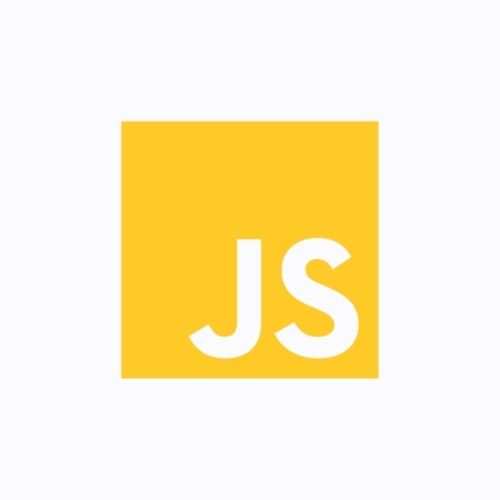

Za 5 meseci rada UŽIVO, naučićemo vas sve top alate potrebne jednom Full stack developeru, kao i najtraženije tehnologije weba. Posle ove edukacije posedovaćete veštine koje će vam omogućiti da lakše dođete do odlično plaćenog posla, kako na domaćem, tako i na stranom tržištu.
Uvod u web development
U prvom delu kursa naucicemo osnove strukture stranica i stilizacije
HTML
HTML, skraćenica od HyperText Markup Language, je standarizovani jezik koji se koristi pri strukturiranju tekstova, medija i ugrađenih objekata u web stranice i elektronsku poštu. Kao modifikovanu i pojednostavljenu verziju SGML jezika, HTML standarizuje i održava World Wide Web Consortium (W3C).
Slika1: HTML logo
CSS
CSS (engl. Cascading Style Sheets) je jezik formatiranja pomoću kog se definiše izgled elemenata veb-stranice. Prvobitno, HTML je služio da definiše kompletan izgled, strukturu i sadržaj veb-stranice, ali je od verzije 4.0 HTML-a uveden CSS koji bi definisao konkretan izgled, dok je HTML ostao u funkciji definisanja strukture i sadržaja.
Slika1: CSS logo
Web development - Front-end deo
U drugom delu kursa naucicemo osnove Javascript-a i React-a
JS
JavaScript je skriptni programski jezik koji se prvenstveno koristi za definisanje funkcionalnosti web stranica na klijentskoj strani. Dinamičan, slabo tipiziran jezik, sa skromnom podrškom za objektno orijentirano programiranje, on zapravo predstavlja implementaciju standarda ECMAscipt-a.

Slika3: JS logo
React
React (poznat i kao React.js ili ReactJS) je Javaskrpit biblioteka otvorenog koda koja obezbeđuje pregled podataka zapisanih preko HTMLa. React pregledi su obično obezbeđeni korišćenjem komponenti koje sadrže dodatne komponente definisane kao prilagođene HTML oznake. React obezbeđuje programeru model u kojem podkomponente ne mogu direktno da utiču na spoljašnje komponente, efikasno ažuriranje HTML dokumenta pri promeni podataka i jasno razdvajanje komponenti na današnjim jednostraničnim aplikacijama.
Slika4: React logo
Web development - Back-end deo
U trecem delu kursa naucicemo osnove PHP i MySQL
PHP
PHP (engl. Hypertext Preprocessor) specijalizovani je skriptni jezik prvenstveno namenjen za izradu dinamičnog veb sadržaja i izvodi se na strani servera. PHP je stekao popularnost zbog svoje jednostavnosti i sintakse nasleđene iz programskog jezika C. Tokom vremena jezik se proširivao i sticao mogućnosti za objektno orijentisano programiranje, naročito od verzije 5.0.
Slika 5: PHP logo
MySQL
SQL (engl. Structured Query Language) je relacioni upitni jezik (ANSI i ISO standard). Relacije se kreiraju jednom naredbom i odmah su dostupne, što ga čini jednostavnim za korišćenje. Uniforman je, jer se svi podaci i rezultati operacija prikazuju u vidu tabele i omogućava interaktivno i klasično programiranje. Sve do verzije SQL:1999 ovaj jezik je bio neproceduralan, odnosno njime se specificiralo ŠTA, a ne i KAKO nešto treba uraditi. MySQL je višenitni višekorisnički SQL sistem za upravljanje bazama podataka. Sistem radi kao server, obezbeđujući višekorisnički interfejs za pristup bazi podataka.